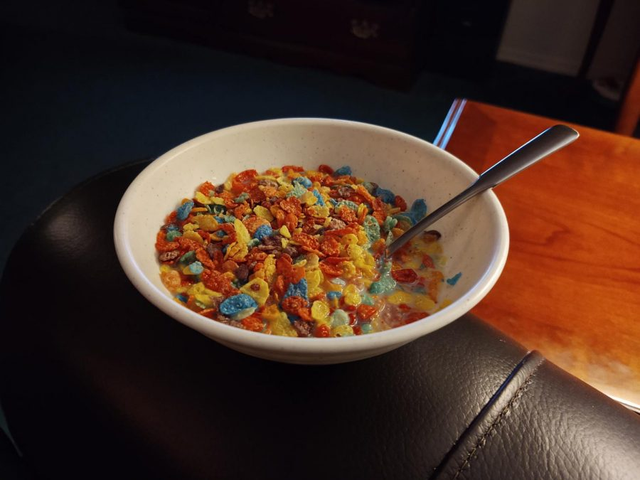

Fruity Pebbles Cereal

Description
How to make Fruity Pebbles Cereal with your favorite type of milk
Ingredients
- POST Fruity Pebbles Cereal
- Milk (You can choose your preference whether it be almond milk, whole, or 1%)
- Bowl
- Spoon
Steps
- Get your Bowl and pour your Fruity Pebbles Cereal until desired amount
- Get your milk and pour into the bowl until you see the Fruity Pebbles float or until desired amount
- Get your Spoon and dip into your bowl
- Enjoy!
Back to All Odin Recipes